Индуктор для
импульсного намагничивания и частичного размагничивания постоянных
редкоземельных магнитов объемом до 140 х 60 х 20 куб. мм (намагничивание по
высоте 20 мм)
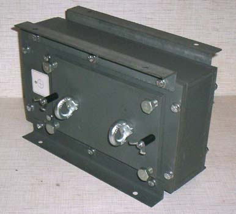
1. Назначение
Индуктор предназначен для импульсного намагничивания до насыщения и размагничивания (частичного или близкого к полному) постоянных магнитов на основе редкоземельных металлов (неодим-железо-бор, самарий-кобальт) спеченных или магнитопластов [5], а также постоянных магнитов любых других марок и составов [6] с меньшими значениями коэрцитивной силы при совместной работе в составе установки импульсного намагничивания (размагничивания) [10] в комплекте с емкостным накопителем энергии [4] достаточной мощности (от 8 кДж 900 В). Форма намагничиваемых магнитов произвольная в пределах габаритов рабочей зоны индуктора (140 х 60 х 20 мм3), направление намагничивания одноосное по размеру 20 мм, . Размагничивание частичное или близкое к полному производится обратным полем. Возможно использование индуктора для стабилизации постоянного магнита или точной подгонки его магнитной индукции.
2. Расчет индуктора
Расчет импульсного индуктора производился с помощью программ Rectangular Coil [8], UNI [3], а также методом конечных элементов [9] с помощью программы Ansoft Maxwell [1]. Результаты расчета параметров прямоугольной катушки индуктора с помощью программы Rectangular Coil для разных амплитуд импульса тока показаны на рис. 2.1 - 2.3. Катушка состоит из 114 витков медного провода диаметром 2.5 мм. Активное сопротивление катушки 0.2063 Ом. Индукция магнитного поля в центре катушки (без стального магнитопровода) составляет 1.451 Тл при амплитуде импульса тока 1304 А (емкостной накопитель энергии 4800 мкФ 1500 В, рис. 2.1), 1.934 Тл при амплитуде импульса тока 1738 А (емкостной накопитель энергии 4800 мкФ 2000 В) и 1.395 Тл при амплитуде импульса тока 1253 А (емкостной накопитель энергии 8 кДж 900 В). Магнитная индукция в точке, сдвинутой от центра и расположенной ближе к обмотке (x = 3 см, y = 2 см, z = 1 см), несколько повыше, аксиальная составляющая 1.636 Тл, 2.181 Тл, 1.572 Тл, соответственно.
Рис. 2.1. Расчет прямоугольной катушки индуктора с помощью программы Rectangular Coil для импульса тока амплитудой 1304 А (емкостной накопитель 4800 мкФ 1500 В).
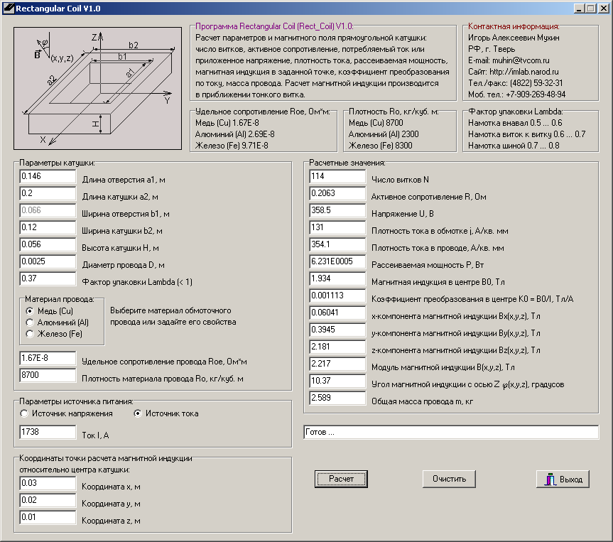
Рис. 2.2. Расчет прямоугольной катушки индуктора с помощью программы Rectangular Coil для импульса тока амплитудой 1738 А (емкостной накопитель 4800 мкФ 2000 В).
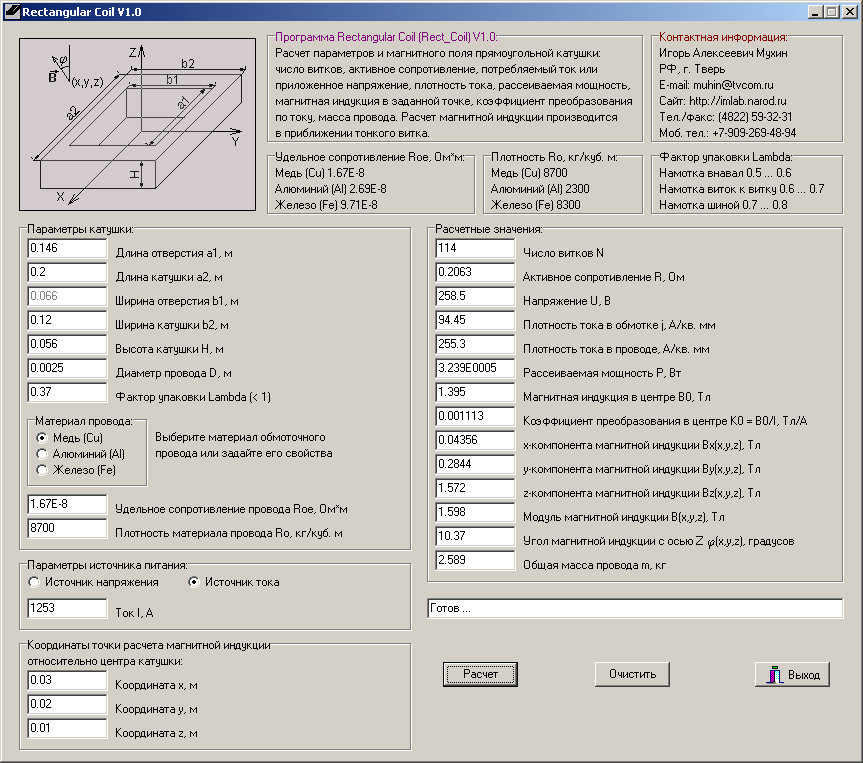
Рис. 2.3. Расчет прямоугольной катушки индуктора с помощью программы Rectangular Coil для импульса тока амплитудой 1253 А (емкостной накопитель 8 кДж 900 В).
Результаты расчета параметров импульса тока через индуктор (катушка со стальным магнитопроводом) с помощью программы UNI при разных напряжениях заряда емкостного накопителя энергии емкостью 4800 мкФ приведены на рис. 2.4, 2.5, а на рис. 2.6 - для емкостного накопителя 8 кДж 900 В. Активное сопротивление рассчитано с помощью программы Rectangular Coil (0.2063 Ом) и принято равным 0.21 Ом. Индуктивность индуктора рассчитана с помощью программы Ansoft Maxwell и принята равной 3.5 мГн. Амплитуда импульса тока составляет 1304 А при подключении катушки к емкостному накопителю энергии 4800 мкФ 1500 В или 1738 А при увеличении напряжения заряда накопителя до 2000 В. Длительность импульса тока несколько больше 10 мс (при времени достижения пика 5.732 мс), что вполне достаточно для намагничивания спеченных редкоземельных постоянных магнитов. При подключении индуктора к емкостному накопителю энергии 8 кДж 900 В амплитуда импульса тока составляет 1253 А, длительность импульса более 20 мс (время достижения пика 10.54 мс).
Рис. 2.4. Расчет параметров импульса тока через катушку индуктора с помощью программы UNI: емкостной накопитель 4800 мкФ 1500 В, амплитуда импульса тока 1304 А.
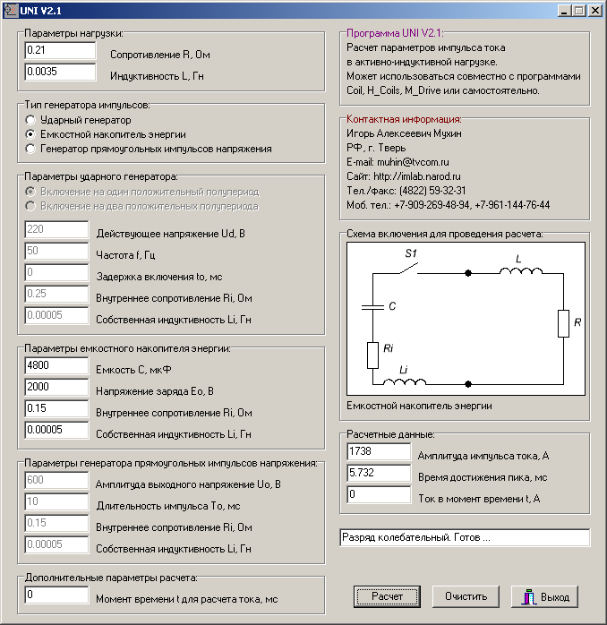
Рис. 2.5. Расчет параметров импульса тока через катушку индуктора с помощью программы UNI: емкостной накопитель 4800 мкФ 2000 В, амплитуда импульса тока 1738 А.
Рис. 2.6. Расчет параметров импульса тока через катушку индуктора с помощью программы UNI: емкостной накопитель 8 кДж 900 В, амплитуда импульса тока 1253 А.
На рис. 2.7 показан вид расчетной модели индуктора в программе Ansoft Maxwell. Магнитодвижущая сила (МДС) катушки, принимаемая для расчета индуктивности и индукции магнитного поля, определяется амплитудой импульса тока через катушку, зависящей от параметров емкостного накопителя энергии (емкости и напряжения). Амплитуда импульса тока, в свою очередь, рассчитывается с помощью программы UNI (см. рис. 2.4 - 2.6).
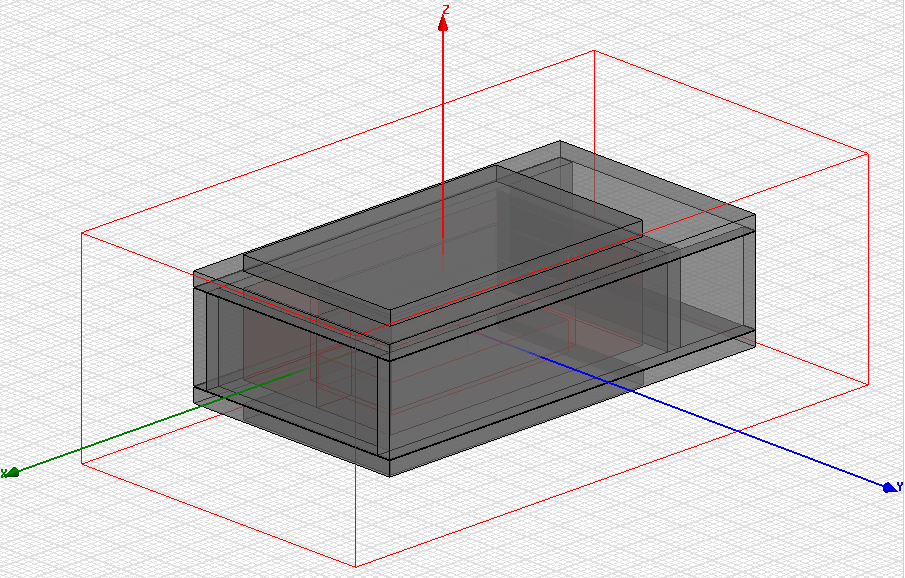
Рис. 2.7. Расчетная модель индуктора в программе Ansoft Maxwell. Стальные детали корпуса показаны серым цветом. Катушка внутри корпуса - красным. Шаг сетки 5 мм.
Расчетное значение индуктивности слабо зависит от амплитуды импульса тока и составляет около 3.5 мГн (3.5164 мГн для тока 1300 А (МДС 148200 А ∙ витков), 3.2143 мГн для тока 1700 А (МДС 193800 А ∙ витков), 3.5668 мГн для тока 1250 А (МДС 142500 А ∙ витков)). Это значение принято для расчетов амплитуды импульса тока через катушку с помощью программы UNI (рис. 2.4 - 2.6).
Расчеты магнитной индукции для разных амплитуд импульса тока приведены на рис. 2.8 - 2.10. На рис. 2.8 показано распределение магнитной индукции для амплитуды тока 1300 А (емкостной накопитель 4800 мкФ 1500 В), на рис. 2.9 - для амплитуды тока 1700 А (емкостной накопитель 4800 мкФ 2000 В), на рис. 2.10 - для амплитуды тока 1250 А (емкостной накопитель 8 кДж 900 В).
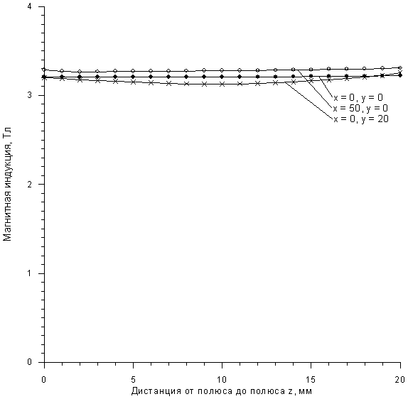
Рис. 2.8. Распределение магнитной индукции в рабочей зоне индуктора (амплитудное значение, емкостной накопитель 4800 мкФ 1500 В, амплитуда тока 1300 А, МДС 148200 А ∙ витков): x = 0, y = 0 – центральная ось катушки (●), x = 50, y = 0 – параллельная центральной ось на расстоянии 50 мм от центра по длинной оси(○), x = 0, y = 20 – параллельная центральной ось на расстоянии 20 мм от центра по короткой оси (x).
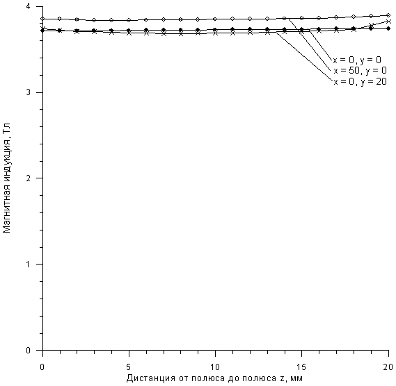
Рис. 2.9. Распределение магнитной индукции в рабочей зоне индуктора (амплитудное значение, емкостной накопитель 4800 мкФ 2000 В, амплитуда тока 1700 А, МДС 193800 А ∙ витков): x = 0, y = 0 – центральная ось катушки (●), x = 50, y = 0 – параллельная центральной ось на расстоянии 50 мм от центра по длинной оси(○), x = 0, y = 20 – параллельная центральной ось на расстоянии 20 мм от центра по короткой оси (x).
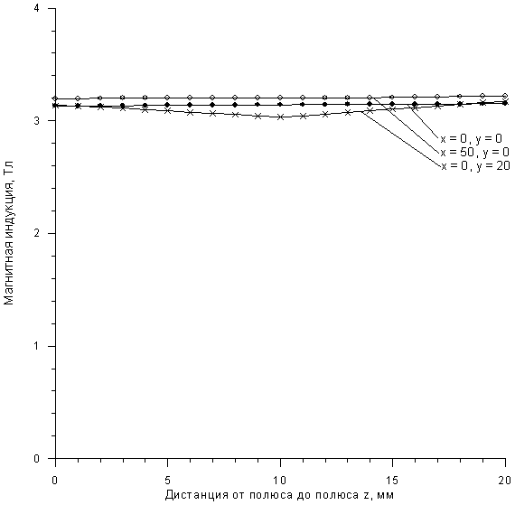
Рис. 2.10. Распределение магнитной индукции в рабочей зоне индуктора (амплитудное значение, емкостной накопитель 8 кДж 900 В, амплитуда тока 1250 А, МДС 142500 А ∙ витков): x = 0, y = 0 – центральная ось катушки (●), x = 50, y = 0 – параллельная центральной ось на расстоянии 50 мм от центра по длинной оси(○), x = 0, y = 20 – параллельная центральной ось на расстоянии 20 мм от центра по короткой оси (x).
При использовании емкостного накопителя энергии 4800 мкФ 1500 В и 8 кДж 900 В амплитуда магнитной индукции в рабочей зоне несколько превышает 3 Тл (рис. 2.8, 2.10), что, в принципе, может быть достаточным для намагничивания редкоземельных магнитов состава неодим-железо-бор и даже самарий-кобальт с не слишком большой коэрцитивной силой. Если требуется намагнитить редкоземельные магниты с большой коэрцитивной силой, то следует использовать емкостной накопитель с большим напряжением заряда, например, 4800 мкФ 2000 В (рис. 2.9).
3. Тепловой расчет
Перегрев обмотки индуктора за один импульс выполнен с помощью программы dTWire [2]. Форма импульса предполагается синусоидальной. Результаты расчета представлены на рис. 3.1 - 3.3 для разных амплитуд импульса тока 1250, 1300 и 1700 А при длительностях импульса тока 21, 12 и 12 мс, соответственно. В первом случае перегрев не превышает 3.4 0C за один импульс, во втором - 2.1 0C, в третьем - 3.6 0C. Количество импульсов в непрерывной серии составит, соответственно, 20 … 30, после чего индуктор потребуется охлаждать. При принудительном охлаждении вентилятором до начальной рабочей температуры время охлаждения обычно не превышает получаса, и общая производительность будет не менее 20 … 30 намагничиваний в час.
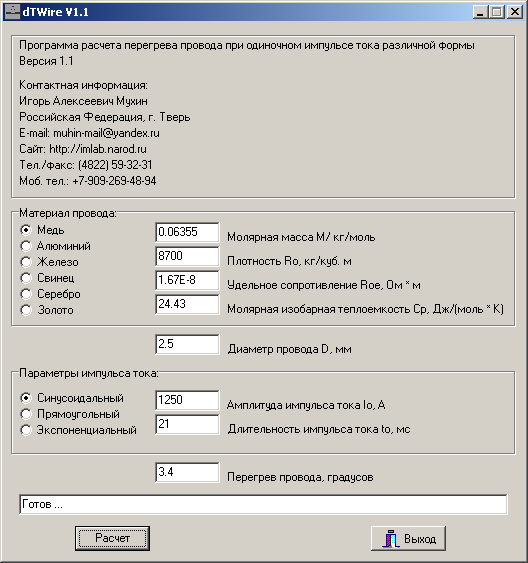
Рис. 3.1. Расчет перегрева обмотки индуктора при подаче синусоидального импульса тока амплитудой 1250 А длительностью 21 мс (емкостной накопитель 8 кДж 900 В).
Рис. 3.2. Расчет перегрева обмотки индуктора при подаче синусоидального импульса тока амплитудой 1300 А длительностью 12 мс (емкостной накопитель 4800 мкФ 1500 В).
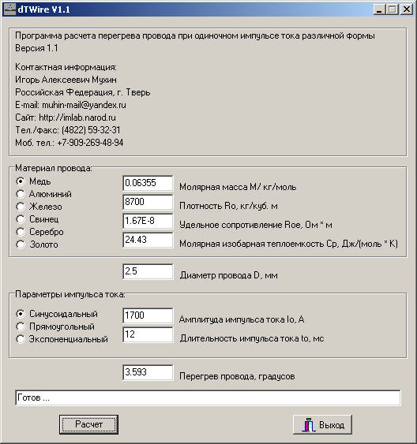
Рис. 3.3. Расчет перегрева обмотки индуктора при подаче синусоидального импульса тока амплитудой 1700 А длительностью 12 мс (емкостной накопитель 4800 мкФ 2000 В).
4. Конструкция индуктора
Упрощенный эскиз индуктора представлен на рис. 4.1 - 4.3. Прямоугольная катушка индуктора зажата в магнитопроводе из четырех стальных плит с прямоугольным проходным отверстием сечением 140 х 60 мм2. В проходное отверстие вставляются полюсные наконечники, обеспечивающие рабочий зазор 20 мм. Для облегчения съема намагниченных магнитов в крышках полюсных наконечников по углам предусмотрены отверстия с резьбой М10 под винты, вкручивая которые, можно оторвать постоянный магнит от одного из полюсных наконечников.
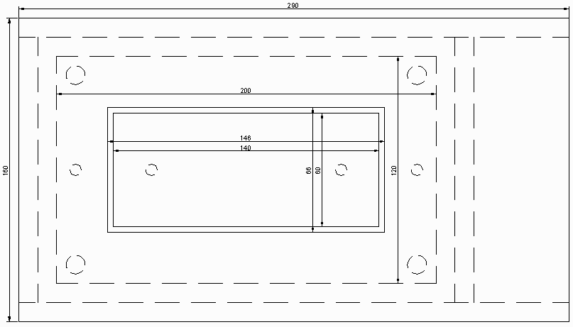
Рис. 4.1. Эскиз индуктора (вид со стороны проходного отверстия).
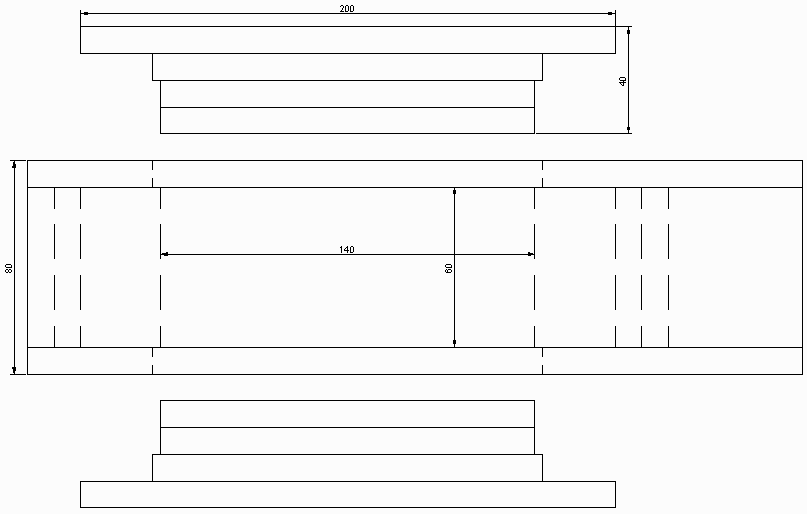
Рис. 4.2. Эскиз индуктора (вид сбоку, полюсные наконечники извлечены из проходного отверстия).
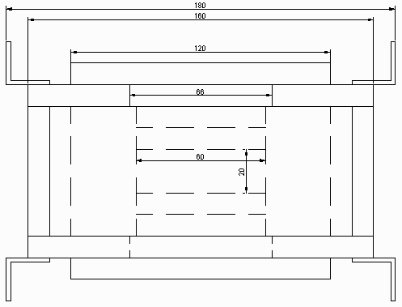
Рис. 4.3. Эскиз индуктора (вид с торца, полюсные наконечники вставлены в проходное отверстие).
Внешний вид индуктора показан на рис. 4.4 - 4.7.
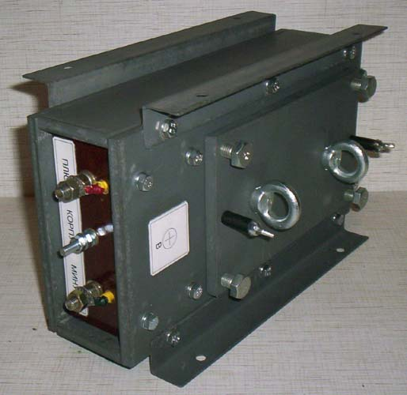
Рис. 4.4. Внешний вид индуктора (полюсные наконечники вставлены в проходное отверстие, на торце расположена клеммная колодка для подключения к емкостному накопителю).
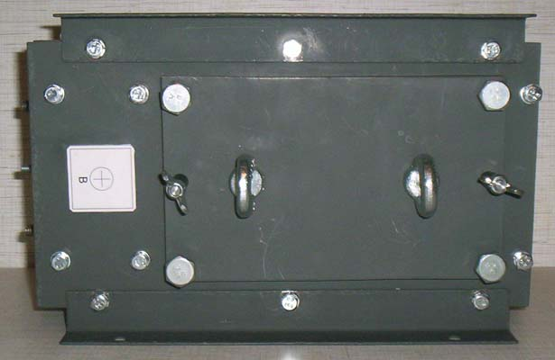
Рис. 4.5. Внешний вид индуктора со стороны проходного отверстия (полюсные наконечники вставлены).
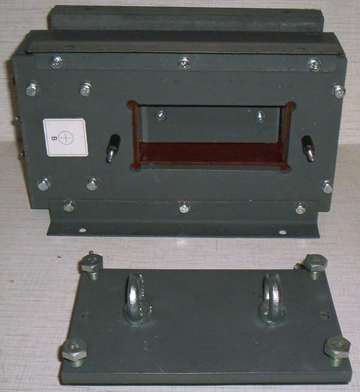
Рис. 4.6. Внешний вид индуктора со стороны проходного отверстия (один полюсной наконечник вынут, второй вставлен).
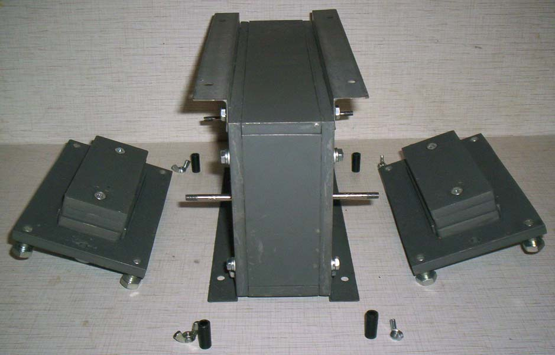
Рис. 4.7. Внешний вид индуктора с торца (полюсные наконечники вынуты).
5. Технические данные индуктора:
6. Испытания индуктора
Активное сопротивление индуктора с кабелем подключения измерено мультиметром APPA-107N и составляет 0.18 Ом, хорошо согласуясь с рассчитанным значением 0.2063 Ом. Индуктивность индуктора с кабелем подключения измерена прибором VC6243 на частоте 1000 Гц и составляет 1.9 мГн. С учетом того, что с ростом частоты измеренная индуктивность уменьшается, измеренное значение 1.9 мГн вполне подтверждает рассчитанное 3.5 мГн.
Контроль амплитуды магнитной индукции в рабочей зоне индуктора выполнялся с помощью импульсного тесламетра [7]. Индуктор испытывался в комплекте с емкостным накопителем энергии 8 кДж 900 В [4] (рис. 6.1, 6.2). Один полюсной наконечник был снят.. Измеренная амплитуда магнитной индукции в рабочей зоне была близка к 3 Тл. Соответствие между данными расчета и измерений достаточно хорошее.
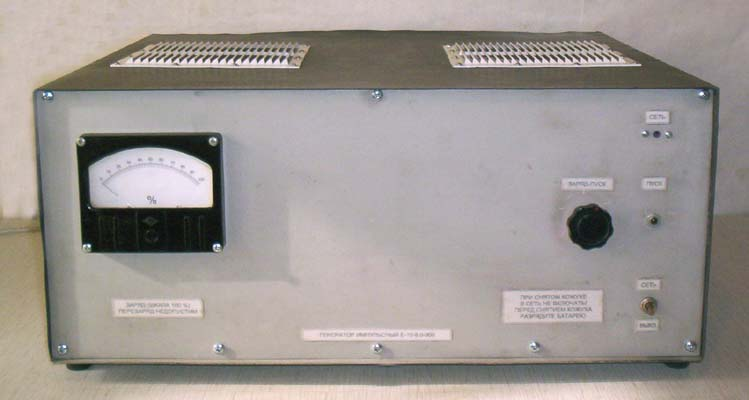
Рис. 6.1. Емкостной накопитель энергии 8 кДж 900 В (вид спереди).
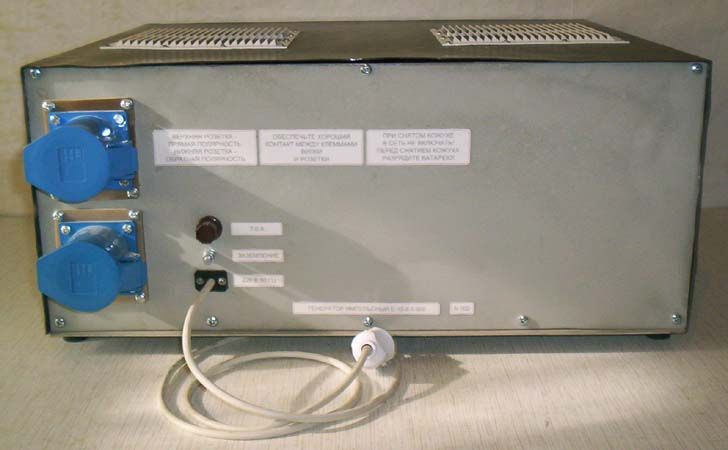
Рис. 6.2. Емкостной накопитель энергии 8 кДж 900 В (вид сзади).
Ссылки:
14.05.2023
Альтернативные источники
энергии
Компьютеры и
Интернет
Магнитные поля
Механотронные системы
Перспективные
разработки
Электроника и
технология